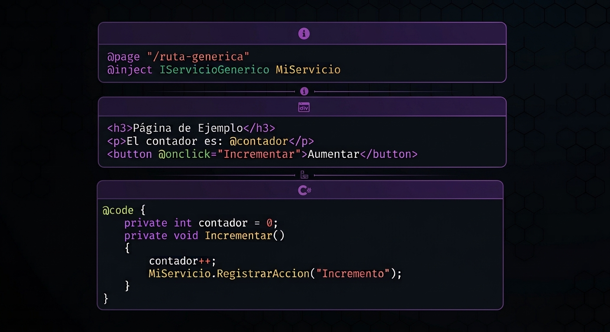

Blazor · 60 min
dotnet --version # tiene que empezar con 9
@code.using, el AddScoped y el @inject.Utiliza la IA como un asistente para aprender y para agilizar el desarrollo de lo ya aprendido.
Blazor Web App · net9.0 + el servicio ya armado
0A · El proyecto. Checkeá que estés conectado a internet. Luego en Rider elegí . En el panel de la izquierda, dentro del grupo .NET, hacé click en . Completá así:
LabBlazor — así tus namespaces coinciden con los del ejercicionet9.0 (debería decir from SDK 9.0)Si el asistente de Rider te da problemas, abrí la terminal de Rider en una carpeta vacía y pegá esto. Después y elegí el archivo LabBlazor.csproj.
dotnet new blazor -o LabBlazor -int Server # crea la carpeta LabBlazor con el proyecto
Espera a que carge el proyecto y dale ▶ Run (o Shift+F10) para confirmar que arranca. Después detenela con ■ Stop antes de seguir.
Now listening on: http://localhost:PUERTO.0B · El servicio y la entidad. Click derecho al proyecto LabBlazor(el de arriba) , nombre Servicios, y renombra Class1 a TareaServicio. Reemplazá todo el contenido por esto. No hay nada que completar, y no se le pide nada a la IA, es una simplificacion dominio/servicio ya armado.
namespace LabBlazor.Servicios;
public class Tarea
{
public int Id { get; set; }
public string Titulo { get; set; } = "";
}
public class TareaServicio
{
private readonly List<Tarea> _tareas = new();
private int _proximoId = 1;
// Un código corto para reconocer cuál instancia del servicio estás usando.
public string IdInstancia { get; } = Guid.NewGuid().ToString("N")[..6];
public IReadOnlyList<Tarea> Listar() => _tareas;
public void Agregar(string titulo)
{
_tareas.Add(new Tarea { Id = _proximoId++, Titulo = titulo });
}
public void Quitar(int id)
{
_tareas.RemoveAll(t => t.Id == id);
}
public void Editar(int id, string nuevoTitulo)
{
var tarea = _tareas.FirstOrDefault(t => t.Id == id);
if (tarea is not null) tarea.Titulo = nuevoTitulo;
}
}
Fijate en cuatro cosas, porque son las que vas a necesitar para escribir el prompt del paso 5:
Tarea es la entidad: tiene un Id y un Titulo.TareaServicio guarda la lista en memoria y sabe Listar, Agregar, Quitar y Editar. Cuatro métodos, y ni uno más.Agregar recibe un string y devuelve nada; Editar recibe un int y un string; Quitar recibe un int.IdInstancia es un código al azar que se genera una sola vez, cuando se crea el objeto. Sirve para reconocer qué instancia del servicio estamos usando.Como el servicio quedó en otro proyecto, LabBlazor todavía no lo puede ver. Click derecho sobre el proyecto LabBlazor → → marcá Servicios → . Sin esa referencia, el paso 4 no compila.
Compilá desde la terminal de Rider:
dotnet build # tiene que terminar en "Build succeeded."
Build succeeded. sin errores, y el ícono del proyecto Servicios aparece referenciado desde LabBlazor. Todavía no hay página de tareas: eso es el paso 3.
contexto antes de promptear
Una página Blazor siempre tiene las mismas tres piezas. Este es un ejemplo completo, para tener algo a qué mirar mientras las describimos:

Las tres, una por una:
@page "/ruta".@code: un bloque de C# con las variables y los métodos de la página. Es la lógica.@inject: la línea que le pide al framework una instancia de un servicio. Es el puente hacia el resto de la aplicación.Y por afuera de todo eso hay dos archivos que vamos a tocar:
Program.cs: donde se configuran los servicios. Ahí se decide si un servicio es Scoped, Singleton o Transient.NavMenu.razor: el menú lateral, donde se selecciona a que pagina ir con un NavLink por página.Singleton, Scoped o Transient. Eso está definido en Program.cs. Este prompt tiene cinco bloques:
Actúa como un experto en diseño UI/UX y diseño de interfaces web. Generá una imagen de alta calidad que represente el diseño de una página web sencilla para registrar tareas a un sistema. Funcionalidad: La página debe permitir ingresar los siguientes datos: -Nombre de la tarea. -Descripción. Elementos de la interfaz: -Un título claro que indique que se está registrando una tarea. -Un formulario con campos bien diferenciados y etiquetas visibles. -Una tabla o lista de tareas debajo del formulario, con un botón Editar y un botón Quitar por tarea. -Una zona reservada para mostrar un mensaje breve después de guardar o de un error. -Un botón principal para guardar la tarea. -Un botón secundario para cancelar o volver. Diseño visual: -Estilo moderno, minimalista y profesional. -Distribución limpia, con buena separación entre los elementos. -Jerarquía visual clara y textos fáciles de leer. -Colores sobrios y consistentes. -Diseño centrado, con suficiente espacio en blanco. Resultado esperado: Una imagen que muestre la página completa, como si fuera una captura de pantalla de una aplicación web real, con datos de ejemplo cuando sea necesario. Priorizá la claridad, la usabilidad y la simplicidad por encima de los elementos decorativos. No agregues funcionalidades que no fueron solicitadas.
Razor + Bootstrap, sin lógica
Ahora sí, el código. Este prompt es deliberadamente estrecho: le pide solamente el HTML/Razor, y le prohíbe explícitamente el @code. La idea es no mezclar las dos cosas: el @code va a salir de un prompt distinto, en el paso 5, con toda la información del servicio.
Abrí una conversación nueva, pegá el boceto que generaste en el paso 2 y mandale este prompt:
Actúa como un desarrollador frontend experto en Blazor Server, Razor y Bootstrap. A partir del boceto de referencia, generá el código markup de Blazor necesario para representar la interfaz. Funciones y variables disponibles (usalas tal cual en los bind y eventos): -Servicio: Servicio (instancia de TareaServicio) -Lista de tareas: Servicio.Listar() → cada tarea t tiene t.Id (int) y t.Titulo (string) -Código de instancia: Servicio.IdInstancia (string) -Campo de texto: texto → @bind="texto" @bind:event="oninput" -Acciones: Agregar() → @onclick="Agregar" Quitar(int id) → @onclick="() => Quitar(t.Id)" Editar(int id, string nuevoTitulo) → @onclick="() => Editar(t.Id, textoEdicion)" -Si el boceto muestra otros elementos que no están en esta lista, no les agregues lógica: dejalos solo como HTML. Requisitos: -Respetá lo más fielmente posible el diseño y la distribución del boceto. -Usá Bootstrap y las clases CSS reutilizables. -Generá código limpio, ordenado y responsive. -Usá los nombres de variables y métodos de la lista de arriba, sin renombrarlos. -Recorré las tareas con @foreach y usá t.Id para identificar cada una en las acciones. -Mostrá Servicio.IdInstancia solo si aparece en el boceto. -No inventes lógica de negocio ni implementes funcionalidades adicionales. -No generes métodos, variables ni propiedades C#. IMPORTANTE: Devolvé ÚNICAMENTE el código markup de Blazor, listo para pegar en un archivo .razor. NO incluyas @code, @inject, directivas @page, CSS, JavaScript, explicaciones ni bloques Markdown.
Rider va a marcar Servicio, tareas, mensaje, error, texto, editandoId, Guardar, Editar y Quitar en rojo. Está bien y es lo esperado: eso se resuelve en los pasos 4 y 5. No compiles todavía ni la corras.
Tareas.razorTienes un archivo con solamente el markup de Blazor comprensible, con errores en rojo. Ese es el estado correcto.
conectar · definir · inyectar
Este es el paso que no le delegamos a la IA. Vamos a conectar el namespace, definir ciclo de vida de la instancia e inyectar la instancia en la página.
Primero agrega en la parte superior del codigo:
@page "/tareas" @rendermode InteractiveServer
@page "/tareas" define la URL de la página, permitiendo acceder a ella desde /tareas.
@rendermode InteractiveServer habilita la interactividad del componente mediante Blazor Server.
4A · Conectar. La página necesita ver las clases del servicio. Para eso, un @using con el namespace donde viven. Agregalo en la tercera linea de codigo
// TODO 1 @using [nombre del namespace del servicio]
4B · Definir. Program.cs es el archivo donde se configuran los servicios de la aplicación: ahí le decimos al contenedor de inyección de dependencias qué servicios existen y con qué «vida». El contenedor se arma en Build(), así que la línea tiene que quedar antes de esa llamada.
using LabBlazor.Services; var builder = WebApplication.CreateBuilder(args); // ... acá quedan las líneas que ya traía la plantilla ... // TODO 2: registrar TareaServicio en el contenedor con vida Scoped var app = builder.Build(); // <- todo lo de arriba tiene que ir ANTES de esta línea
builder.Services.AddScoped<MiClase>();. El nombre del método elige la vida del servicio (AddScoped, AddSingleton o AddTransient) y entre los signos <> va el nombre de la clase que querés registrar.using necesario.
4C · Inyectar. Y por último, la línea que le pide la instancia a la página. Va en Tareas.razor, debajo del @using del TODO 1.
@page "/tareas" @rendermode InteractiveServer @using TODO 1 <!-- TODO 3: acá va el @inject con el tipo y el nombre del servicio --> <h1>Mis tareas</h1>
@inject TipoDelServicio NombreQueElijas. Primero va el tipo (la clase del servicio) y después el nombre con el que lo vas a usar en el resto de la página: fijate cuál aparece en rojo del markup que pegaste en el paso 3
Tareas.razor arranca con @page, @rendermode, @using e @inject. El archivo va a estar lleno de rojo y la compilación va a fallar: es el estado correcto.
la lógica de la página
Último prompt. Este es el más delicado de los tres, porque acá la IA tiene que saber cosas que no puede inventar: cómo se llama tu servicio, qué métodos tiene y qué recibe cada uno. Por eso el prompt no dice «hacé un formulario»: dice este es mi servicio, con estos métodos, armá el @code con esta estructura.
Antes de mandarlo, reemplazá todos los [ejemplo: …] (marcados en amarillo) por lo de tu proyecto. Si tu servicio tiene métodos distintos, adaptalos: lo que no puede hacer la IA es adivinar.
Actúa como un desarrollador Blazor Server que trabaja en arquitectura de capas. Generá el bloque @code para este formulario siguiendo el patrón mostrado. Ya tenés inyectado el servicio, así que NO lo declares: [ejemplo: @inject TareaServicio Servicio] Este es el servicio y sus métodos exactos, no inventes otros: [ejemplo: Listar() devuelve IReadOnlyList· Agregar(string titulo) · Editar(int id, string nuevoTitulo) · Quitar(int id) · IdInstancia] ESTRUCTURA: 1. Propiedades de datos: [ejemplo: private IEnumerable tareas;] [ejemplo: private string texto = "";] 2. Propiedades de control: [ejemplo: private int? editandoId;] [ejemplo: private string mensaje = "";] [ejemplo: private string error = "";] 3. Ciclo de vida: - OnInitialized(): Carga los datos del servicio 4. Métodos principales (uno por acción): - Guardar(): Crea una tarea nueva o guarda los cambios, según corresponda - Editar(tarea): Prepara la edición - Quitar(id): Elimina 5. Método Guardar() con try-catch: - Llama al servicio según el caso - Maneja excepciones - Actualiza mensajes - Limpia formulario 6. Métodos auxiliares: - Cargar(): Recarga los datos del servicio - ClearMessages(): Limpia los mensajes IMPORTANTE: -Try-catch en las operaciones que lo requieran. -Devolvé ÚNICAMENTE el bloque @code, listo para pegar dentro del archivo .razor. -NO incluyas directivas @page, @inject ni @using, porque ya están escritas. -No generes métodos, variables ni propiedades C# que no estén en la estructura de arriba.
La respuesta debería verse así (o muy parecida):
@code {
// 1. Propiedades de datos
private IEnumerable<Tarea> tareas = Enumerable.Empty<Tarea>();
private string texto = "";
// 2. Propiedades de control
private int? editandoId;
private string mensaje = "";
private string error = "";
// 3. Ciclo de vida
protected override void OnInitialized()
{
Cargar();
}
// 4. Métodos principales
private void Guardar()
{
try
{
if (string.IsNullOrWhiteSpace(texto)) return;
if (editandoId is null)
{
Servicio.Agregar(texto);
mensaje = "Tarea agregada.";
}
else
{
Servicio.Editar(editandoId.Value, texto);
mensaje = "Tarea actualizada.";
}
texto = "";
editandoId = null;
Cargar();
}
catch (Exception ex)
{
error = ex.Message;
}
}
private void Editar(Tarea t)
{
editandoId = t.Id;
texto = t.Titulo;
ClearMessages();
}
private void Quitar(int id)
{
try
{
Servicio.Quitar(id);
Cargar();
}
catch (Exception ex)
{
error = ex.Message;
}
}
// 5. Métodos auxiliares
private void Cargar()
{
tareas = Servicio.Listar();
}
private void ClearMessages()
{
mensaje = "";
error = "";
}
}
TareaServicio con la misma entrada? Si inventó Obtener() o Borrar(), no compila: corregilo vos.@inject? Vos ya la escribiste en el paso 4; si la pegás dos veces, Blazor se queja.tareas, texto, editandoId, mensaje, error)? Si la IA le puso otros, el markup se rompe.Acá sí: por primera vez vas a correr la aplicación. Hasta ahora el proyecto no compilaba, porque el markup del paso 3 llamaba a cosas que todavía no existían. Ya están todas.
■ Stop, ▶ Run. Como todavía no hay opción en el menú (eso es el paso 6), escribí http://localhost:PUERTO/tareas a mano en la barra de direcciones.
NavMenu.razor + NavLink
La página ya anda, pero hasta ahora tuviste que escribir /tareas a mano en la barra de direcciones. En este paso la conectás al menú lateral, para entrar desde la Home con un click y volver, sin tocar la barra.
Abrí Components/Layout/NavMenu.razor. Ahí está el menú lateral: cada opción (Home, Counter, Weather) es un bloque con un NavLink.
TODO 4: Agregá una opcion más, debajo de las que ya están, pero ahora que lleve a tu página de tareas.
NavLink lleva a otra página con su atributo href aqui se pone la ruta definida en @page Detené la app con ■ Stop y volvé a correrla con ▶ Run. Se abre en la Home, en la dirección de siempre, sin /tareas. Entrá a tu página desde el menú y probá que los botones ahora sí responden.
para los que terminaron antes
bool Hecha a Tarea y un botón para marcarla como hecha. Esta parte la tenés que hacer con IA: volvé al prompt del paso 3, pedile el botón, y después adaptá el prompt del paso 5 para que el Guardar lo tenga en cuenta. Ojo: TareaServicio no tiene ningún método para marcar, así que vas a necesitar agregar uno.